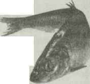
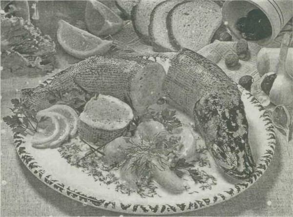
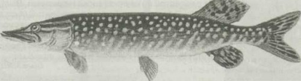

Салаты и закуски
 Паштет из рыбьих голов
Паштет из рыбьих голов
Головы (1 кг) очистить от жабер, можно добавить несколько кусочков рыбы. Положить в казан, засыпать 500 г. измельченного лука, 300 г натертой на терке моркови, 15 горошин перца, влить 50 г растительного масла, воды столько, чтобы не закрывала поверхность содержимого, соль — по вкусу.
Довести до кипения, огонь уменьшить и варить 5-6 часов. За это время сварятся все кости. Перед концом варки добавить измельченные чеснок, кинзу, лавровый лист, черный и красный перец. Когда остынет, дважды пропустить через мясорубку, по желанию заправить сливочным маслом. Очень вкусно для бутербродов.
Людмила КРИНИЦЫНА, г. Ишим Тюменской обл.
Заливные рулетики из сардин600 г мороженых сардин, 2 ст.л. мелко нарезанного укропа, 1 ч.л. соли, 1/4 ч.л. черного молотого перца, 0,5 л. готового рыбного желе, 1 /4 ст. 3%-ного уксуса.
Из подготовленных сардин удалить хребтовую кость так, чтобы не повредить кожу на спинке и обе половинки филе остались вместе. Внутреннюю полость рыбы посыпать солью, перцем и укропом. Свернуть рыбу рулетиком, начиная с хвоста, закрепить край острой деревянной шпилькой, выложить рулетики одним слоем в неглубокую посуду и залить горячим бульоном. Добавить уксус, припустить в течение 5-8 мин. Вынуть рулетики шумовкой и после охлаждения удалить из них шпильки. Разложить рулетики на блюде, залить прохладным, но не застывшим желе и вынести на холод.
Наталья ЗАВЕДЕЕВА, г.Волковыск.
Салат «Птичьи гнезда»Предварительно вымоченные 2 соленые сельди, очистить от кожи, вынуть кости. Филе мелко нарубить, смешать с 1 рубленым свежим яблоком, 1 головкой обжаренного в растительном масле измельченного лука, добавить 50 г размягченного сливочного масла. Уложить смесь на листья салата в виде гнезда (можно на листья бланшированной капусты) с углублением в центре. В это углубление поместить желток вареного яйца. Посыпать рубленым белком и мелко нарезанной ветчиной. Украсить «гнездо» репчатым луком, нарезанным кольцами.
Ирина ВЕТКИНА, ст. Егорлыкская.
Рыбный паштетГотовить лучше из мелкой речной рыбы, которую иногда и выбросить не жалко. Отрезать головы, выпотрошить, чешую счистить только с крупной рыбы, у мелкой можно не счищать, посолить, сложить в кастрюлю. Положить луковицу и морковь целиком, лавровый лист, черный перец горошком, залить водой вровень с рыбой. Добавить растительное масло (50 г — на 1 кг рыбы), немного уксуса, посолить, поставить на медленный огонь. Варить 4-7 часов, пока кости не разварятся, можно в несколько приемов. Когда кости станут мягкими, лавровый лист вынуть, остальное пропустить через мясорубку, прокипятить еще раз, остудить.
Анна КОЧЕРГИ НА, г.Сасово Рязанской обл.
«Осетрина» из скумбрии1 кг свежемороженой скумбрии очистить и разрезать на куски по 3-4 см. Головы без жабр и плавники сложить в кастрюлю, залить 1 л воды, посолить по вкусу, варить 20 мин. Отвар процедить, положить лавровый лист, перец горошком, гвоздику, влить 2 ст.л. 9%-ного уксуса. Довести отвар до кипения и опустить в него куски рыбы. Варить от момента закипания 10 мин. Затем кастрюлю снять с огня и быстро охладить со всем содержимым. Отвар превратится в желе. Рыбу подавать с хреном.
Наталья ЮРКЕВИЧ, д. В— Телеханская Брестской обл.
Салат из сельди с орехамиИзмельчить филе одной сельди, смешать с 0,5 ст. толченых грецких орехов и выложить в салатник. Накрыть слоем рубленых вареных яиц (3 шт.). Спассеровать в растительном масле 2 измельченные репчатые луковицы и 2 натертые на крупной терке моркови. Выложить эту массу поверх яиц и залить майонезом Украсить зеленью.
Мария ШУРХОВЕЦКАЯ, п. Победа Гомельской обл.

•Рыбу готовят по системе «три П» — почистить, подкислить, посолить. Сначала ее следует очистить от чешуи в направлении от хвоста к голове. Если чешуя не отделяется, подержать рыбу в горячей воде. Затем ее нужно разрезать от головы до хвоста (по брюху), удалить внутренности и черную пленку, отрезать плавники ножницами, тушку быстро и тщательно промыть в холодной воде.
Подкисляя, сбрызнуть рыбу уксусом или лимонным соком, положить в закрытую посуду, поставить в холодное место. Это делает мясо рыбы твердым и белым, запах приятным, свертывает белок. Если готовить рыбу целиком, то нужно сбрызнуть уксусом или лимонным соком и брюшную полость. Солить рыбу нужно непосредственно перед приготовлением очень осторожно, чтобы избежать выделения сока из филе. Если рыба долго будет оставаться подсоленной, мясо станет сухим.
Закуска из пряной мойвы8 шт. мойвы пряного посола, половина соленого огурца, 1 яйцо, 0,5 ст. майонеза, зелень.
Огурцы нарезать вдоль на равные пластинки, уложить в селедочницу через 1-2 см одна от другой, сверху положить филе пряной мойвы. Залить майонезом и поставить на 15-20 мин. в холодильник.
Перед тем, как поставить на стол, украсить дольками яйца, сваренного вкрутую, зеленью.
Андрей ПЕТРУСЕВИЧ, г.Жабимка.
Салат из зубатки10 яиц, 500 г зубатки, 300 г сыра, 2 луковицы, 200 г сливочного масла, 0,5 л майонеза, соль — по вкусу.
Рыбу и яйца отварить. Рыбу нарезать кусочками, остальные продукты натереть на крупной терке и уложить в салатник, промазывая слои майонезом, в следующем порядке: белки, рыба, лук, сыр, сливочное масло, рыба, сыр, сливочное масло, желтки.
Валентина ЗБЕНЯКОВА, г.Орел.
Фаршированная щука1 щука весом примерно в 1 кг, 2 ломтика белого батона, 2 яйца, 50 г сливочного масла, 100 г репчатого лука, 70 г сливок, 1 ст.л. сметаны, соль, молотый перец, мускатный орех, корень петрушки или сельдерея, лавровый лист, перец горошком.
Для украшения: 1 лимон, 2 огурца, 1 вареная морковь.
Отрезать у рыбы голову, аккуратно снять с тушки кожу «чулком». Отделить филе от костей. Булку замочить в сливках, лук измельчить и обжарить в масле до золотистого цвета. Все пропустить через мясорубку вместе с рыбным филе. Добавить сырые яйца, соль, молотый перец, мускатный орех и сметану. Полученную массу хорошо вымесить и наполнить ею щучью кожу. Отверстие аккуратно зашить. (Лучше сделать 3-4 стежка, если больше, кожа во время варки может порваться). Положить в утятницу, залить теплой подсоленной водой, добавить очищенный корень петрушки или сельдерея, морковь. Варить на слабом огне, не накрывая крышкой, в течение 1,5 часов.
Готовую рыбу остудить, выложить на продолговатое блюдо, надрезать ломтиками, не

отделяя друг от друга. Лимон вымыть горячей водой, аккуратно вырезать на кожице бороздки вдоль всего плода, нарезать кружочками и вставить их в надрезы между ломтиками рыбы. Вареную морковь нарезать кружочками, выложить сбоку рыбы. Огурцы надрезать наискосок тонкими ломтиками, не дорезая до конца, развернуть веером и положить на блюдо возле хвоста рыбы. Можно сбоку насыпать зеленый горошек и рыбные фрикадельки. Подавать рыбу с хреном.
Елена КОЛОНТЛЙ, г. Глубокое.

Лекарство от алкоголизма. Живую щуку (она должна еще дышать) весом около 250 г поместить в литровую банку, залить 0,5 л водки, плотно закрыть полиэтиленовой крышкой и поставить на 7 суток в прохладное темное место (но не в холодильник). Затем 5-6 раз процедить настойку через 2-3 слоя марли и дать пьющему. Желательно, чтобы он выпил ее в течение одного дня.
Газета*Народный доктор*.
Рыбные «Рафаэлло »Растереть в однородную массу 1 банку печени трески (без масла), 4 яйца, сваренных вкрутую, 4 желтка. Добавить 50 г размягченного сливочного масла, можно добавить немного масла из консервов (если масса суховата), по желанию — черный молотый перец и натертый на мелкой терке лук. Все смешать и сформовать шарики (около 25 шт.). На мелкой терке натереть черствый твердый сыр и обвалять в нем шарики. Сложить в коробку и поставить в холодильник на 2 часа. Лучше приготовить вечером, а утром подать к столу.
Наталья СТАСЮК, г.Запорожье, Украина.
Рыбка под маринадомРыбу (хек, минтай) обжарить и сложить в кастрюлю. Репчатый лук нарезать кольцами, обжарить в растительном масле вместе с натертой на крупной терке морковью. Выложить на рыбу. В 1 ст. горячей воды растворить 3/4 ст.л. соли, 1 ст.л. сахара, влить 1 ст.л. 9%-ного уксуса. Залить маринадом рыбу, тушить 15 мин. Затем добавить натертое на крупной терке яблоко, бутон гвоздики, щепотку молотой корицы и варить еще 5 мин.
Ольга МИШИНА, г. Полоцк.
Морские фантазии250 г любых макаронных изделий, 1 ст.л. растительного масла, 200 г филе морской рыбы, 1 яйцо, 0,5 ст. молока, 100 г сыра, соль — по вкусу.
Отварить в подсоленной воде макаронные изделия, слить воду, промыть, охладить. Сковороду или форму для запекания смазать растительным маслом, выложить макароны, залить взбитой молочно-яичной смесью. Рыбное филе нарезать на кусочки, посолить, выложить на макароны, посыпать тертым сыром. Запекать в духовке при средней температуре 30 мин.
Елена ВЛАСИК, г.Минск.
По-крестьянскиСвежую рыбу очистить от костей, нарезать небольшими кусками. Лук и морковь мелко нарезать и перемешать. В глубокую кастрюлю положить слой из кусочков рыбы, сверху — лук с морковью, лавровый лист. Так же выложить всю оставшуюся рыбу, чередуя с овощами, посыпанными сахаром, перцем, солью по вкусу. Полученное блюдо залить растительным маслом и томатной пастой, разведенной до консистенции густой сметаны. Накрыв кастрюлю крышкой, довести содержимое до кипения на большом огне. Затем крышку снять и пропарить рыбу на слабом огне.
Готовым блюдо можно считать, когда весь сок выкипит и останется красное масло. Такую рыбу подавать как холодную закуску.
Все пропорции — по желанию.
Людмила ДУДЧИК, д. Титове Тверской обл.